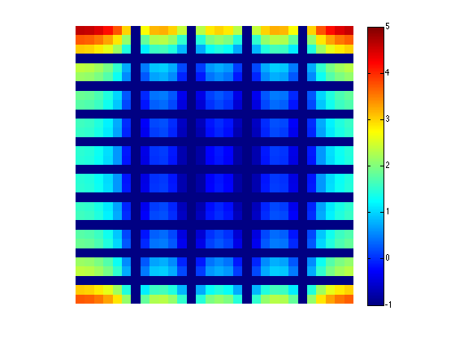
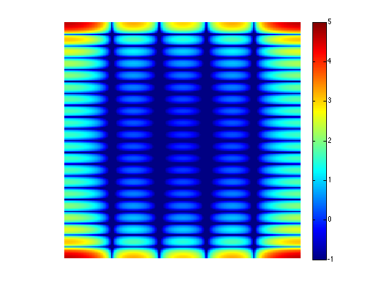
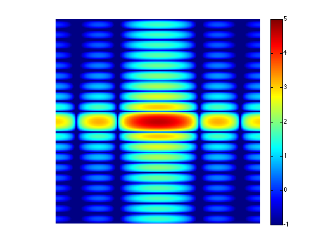

Contents
clc
clear
Imagen
f = zeros(30,30);
f(5:24, 13:17) = 1;
imshow(f,'InitialMagnification','fit')
Transformada de Fourier Discreta
F = fft2(f);
F_D = log(abs(F));
imshow(F_D,[-1 5], 'InitialMagnification','fit');
colormap(jet); colorbar

Zero Padding
F = fft2(f,256,256);
F_ZP = log(abs(F));
imshow(F_ZP,[-1 5], 'InitialMagnification','fit');
colormap(jet); colorbar

Cuadrantes
F = fft2(f,256,256);
F_C = fftshift(F);
F_C = log(abs(F_C));
imshow(F_C,[-1 5], 'InitialMagnification','fit');
colormap(jet); colorbar

Transformada de Fourier Manual
i=sqrt(-1);
[M,N]=size(f);
for u=1:M
for v=1:N;
F_M(u,v)=0;
for x=1:M
for y=1:N,
F_M(u,v) = F_M(u,v) + f(x,y)*exp(-2*pi*i*((u-1)*(x-1)/M+(v-1)*(y-1)/N));
end
end
end
end
F_log = log(abs(F_M));
imshow(F_log,[-1 5], 'InitialMagnification','fit');
colormap(jet); colorbar
Transformada Inversa de Fourier
f_t = ifft2(F_M);
imshow(f_t,'InitialMagnification','fit')
Warning: Displaying real part of complex input.
Transformada Inversa de Fourier Manual
i=sqrt(-1);
[M,N]=size(f);
for x=1:M
for y=1:N;
f_m(u,v)=0;
for u=1:M
for v=1:N;
f_m(x,y) = f_m(x,y) + F_M(u,v)*exp(2*pi*i*((u-1)*(x-1)/M+(v-1)*(y-1)/N));
end
end
end
end
f_m = (1/M*N)*f_m;
imshow(f_m,'InitialMagnification','fit')
Warning: Displaying real part of complex input.